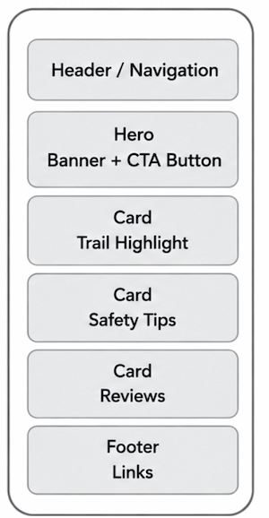
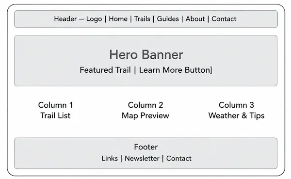

WDD 131 - Project Site Plan
Domain: hikezim.org
Logo: Mountain silhouette of Eastern Highlands with trail path
I chose HikeZim because it is short, memorable, and clearly describes the site focus - hiking in Zimbabwe. It is brandable for both local and international hikers.
The purpose of HikeZim is to be a central hub for hiking information in Zimbabwe. Zimbabwe has awesome hiking in places like Eastern Highlands, Matopo Hills, and Nyanga, but information is scattered online.
Heading Font: Montserrat 700 - Used for all h1, h2, h3 headings. Bold and adventurous.
Example: Explore the Eastern Highlands
Body Font: Open Sans 400 - Used for paragraphs and navigation. Very readable.
Example: The trail winds through misty forests with stunning views of Mutarazi Falls.

